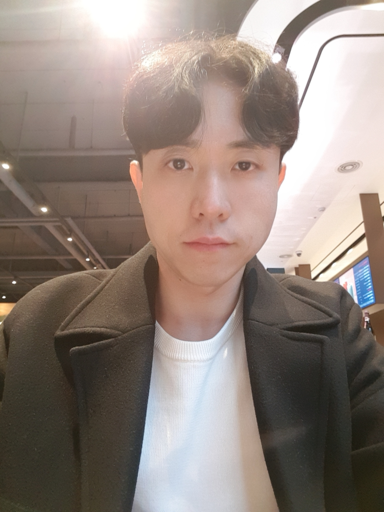

강남규 | Namkyoo Kang

RESEARCH INTEREST
Augmented Reality, Mixed Reality, 3D Interaction, 3D UI, multimodal interface, HCI
EXPERIENCE
한국전자통신연구원 (ETRI) 인턴연수생
- 현재~2020.07.
- 통신미디어연구소 차세대콘텐츠연구본부 지능형지식콘텐츠연구실
- <생활안전 체험교육을 위한 실감형 콘텐츠 기술 개발>, 행정안전부 과제 참여중
- 착용형센서장치 / VR 콘텐츠개발 / UI, UX / 포즈인식
- HW: KATVR 등 트레드밀 장비, VIVE, Odyssey, 햅틱 글러브
- SW: Unity, C++, 파이썬
- 지원기업: 모션디바이스 (안양)
G-Lab (스타트업)-R&D 팀원 (초창기 멤버)
- 2020.07.~2019.10.
- 홀로렌즈 기반 산업용 AR 서비스 <AR Handbook (beta)> 기획 및 개발
- 사용자 중심의 <AR Handbook (beta)> UI 기획
EDUCATION
성균관대학교 인터랙션사이언스 석사
- 2019.02~2017.02
- 연구실: Interaction Design Development Lab (지도교수: 이 상원)
- 졸업논문: Effects of visual and auditory cues on perceptions of active and passive touch with virtual objects in Mixed Reality
한국기술교육대학교 디자인공학과 학사
- 2014.08~2009.03
- 졸업작품: 온새미로: 보행 보조기 이용 독거노인을 위한 싱크대 디자인
PUBLICATION
<해외 저널>
Effects of visual and auditory cues on haptic illusions for active and passive touches in mixed reality
- Kang, N., Sah, Y., & Lee, S. (2019, November)
- International Journal of Human-Computer Interaction (Submitted)
<국내 학회>
혼합현실 내 시청각 단서가 촉감 인지에 미치는 영향
2019 춘계 대한인간공학회 논문경진대회 최우수상 수상작
- 강남규, 하태현, & 이상원. (2019).
- 대한인간공학회 학술대회논문집, 17-20.
감성공학적 기법을 응용한 과자 포장지 리디자인. 대한인간공학회 학술대회논문집
- 강남규, 박재희. (2013).
- 대한인간공학회 학술대회논문집, 257-261.
<해외 학회>
A meta-analysis of recent studies on haptic feedback enhancement in immersive-augmented reality.
- Kang, N., & Lee, S. (2018, February).
- In Proceedings of the 4th International Conference on Virtual Reality (pp. 3-9).
HONORS AND AWARDS
VR/AR 콘텐츠 아이디어 상용화 지원사업 2단계 선정 (2020.05.25.)
- <발전 설비 점검·진단 증강현실을 적용한 ICT 디바이스 솔루션>
- G-Lab (이정근(대표), 강남규(팀원) 외 3명)
- 정보통신산업진흥원 (NIPA)
기업자율형 창업프로그램 ‘집중 스타트업’ 최종 선정 (2020.04.21.)
- <발전 설비 점검·진단 증강현실을 적용한 ICT 디바이스 솔루션>
- G-Lab (이정근(대표), 강남규(팀원) 외 3명)
- 울산테크노파크, 한국동서발전
2019년 제 5회 논문경진대회 최우수상 수상 (2019.05.16.)
- <혼합현실 내 시청각 단서가 촉감 인지에 미치는 영향> 논문 발표
- 강남규, 하태현, 이상원
- 2019년 대한인간공학회 춘계 학술대회
2012년도 충남 365 발명의 날 우수작 수상 (2012.11.28.)
- <도난 방지용 자전거 자물쇠> 디자인
- 충남지식재산센터
PROJECTS
네이버 아웃링크 기반 언론사 웹사이트 사용자 경험 연구, 네이버 지원 프로젝트 (2018.10.~2018.07)
- 네이버 댓글 정책 방향성에 의한 관련 서비스 사례들과 연계한 문제 해결방법 도출
LG무선사업부 강연 준비, LG 지원 프로젝트 (2018.05.~0218.04)
- 유망 기술 트렌드 분석 (AR, VR 부분 참고 사례, 기기, 플랫폼 등)
TECHNICAL STRENGTH
- Computer Languages:
C, C++, C#, Python, JavaScript
- Hardware:
Microsoft HoloLens
- Software:
Unity 3D, Visual Studio, Visual Studio Code, MATLAB, PyCharm, Brackets
- Open Framework:
TensorFlow, OpenCV
- CAID tools:
Adobe Illustrator & Photoshop, Autodesk AutoCAD & Alias, Dassault Systèmes Solidworks, KeyShot
OTHER EXPERIENCE
| 기관 | 내용 | 기간 |
|---|---|---|
| 인공지능센터 | 시각 인지 고급 과정 (수강중) |
2020.06.~2020.04. |
| 한국전자정보통신산업진흥회 멀티캠퍼스 |
비전(사람ㆍ사물)인식 딥러닝 활용 전문가 과정 수료 |
2020.01.~2020.01. |
| Algorithm Jobs (알고리즘 잡스) | C, C++알고리즘 및 자료구조 교육 수강 |
2019.10.~2019.03. |
| 성균관대학교 소프트웨어대학 | 2019년 소프트웨어대학 기술교류회 (S-TOP) 참여 |
2019.02.22. |
| 경기콘텐츠진흥원 유니티러닝센터 |
2018 VR/AR 아카데미 기본과정 (콘텐츠 제작과정) 수료 |
2018.08.29.~2018.06.20. |
| 성균관대학교 소프트웨어대학 | BK+21 연구 조교 |
2019.02.~2018.03. |
| COEX (코엑스) | VR EXPO 2017, VR EXPO 2018 참관 |
2018.12.19.~2018.12.18. 2017.03.11.~2017.03.09. |
| Unity 러닝센터 | 유니티 3D 기초과정 수료 |
2017.09.~2017.08. |
| 종로 KG IT뱅크 | Python 기초과정 수료 |
2017.03.~2017.02. |
| 당산 TIS 전문학원 | HTML5 기반 반응형 웹디자인 과정 수료 |
2017.01.~2016.12. |
| The University of Illinois at Urbana and Champaign |
Intensive English Institute |
2010.12.~2010.08. |